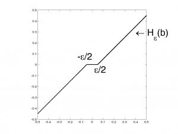
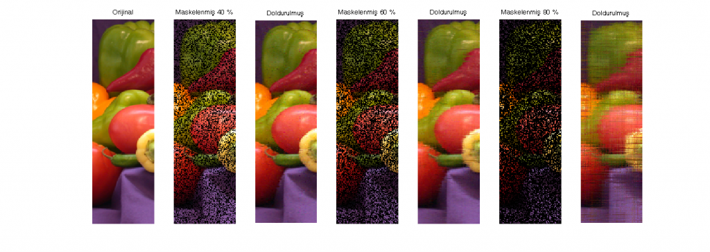

Gürbüz $l_1$-normunda pratik düşük-mertebeli matris yaklaştırması
Şöyle bir problemimiz olsun:
$$\min_{U,Z} \|M\odot (X-UZ)\|_1$$
$\DeclareMathOperator*{\argmin}{arg\min}
\DeclareMathOperator*{\argmax}{arg\max}
\newcommand{\trace}[1]{\operatorname{trace}\left[#1\right]}
\newcommand{\isreal}[1]{\in \mathbb{R}^{#1}}
$
öyle ki:
- $X \isreal{m\times n}$ veri matrisi;
- $U \isreal{m\times r}$ ve $Z \isreal{r\times n}$ çarpanlar;
- ve $M$ maskedir.
Problemi yeniden tasarlayalım:
\begin{align}
\min_{U,Z} \ & \|M\odot(X-UZ)\|_1 + \lambda \|UZ\|_*, \\
\text{s.t.}\ & U^\intercal U = I_r \notag
\end{align}
öyle ki:
- $I_r \isreal{r\times r}$ birim matris;
- $U$ ortonormal;
- $\|Z\|_*$ çekirdek normu, yani $Z$'nın tekil değerlerinin toplamı;
- ve $\lambda \isreal{}$ ağırlık çarpanıdır.
Normların şu özelliğini aklımızda tutalım:
\begin{align*}
\|UZ\| = \|Z\|
\end{align*}
Genişletilmiş Lagrangian ile yazarsak:
\begin{align}
\min_{E,U,Z} \ & \|M\odot(X-E)\|_1 + \lambda \|Z\|_*, \\
\text{s.t.}\ & E = UZ, \ U^\intercal U = I_r \notag
\end{align}
İlgili Lagrangian fonksiyon şöyledir:
\begin{align}
f(E,U,Z,L,\mu) = & \|M\odot(X-E)\|_1 + \lambda \|Z\|_* + \langle L, E-UZ \rangle + \frac{\mu}{2} \|E-UZ\|_F^2
\end{align}
\min_{x} \ & g(x), \\
\text{s.t.}\ & c_i(x) = 0, \ \forall i \in \mathcal{I} \notag
\end{align}ALM'nin takip edeceği kısıtlandırılmamış hedef şöyledir:
\begin{align}
\min_x f (x, \mu, L) = g(x) + \frac{\mu}{2} ~ \sum_{i\in I} ~ c_i(x)^2 + \sum_{i\in I} ~ L_i c_i(x)
\end{align}
Çözümü yinelemeli olacak:
- Rastgele $x, \mu, L$ ile başla;
- Her yinelemede, $\frac{\partial f}{\partial x} = 0$ durumunu sağlayan $x$'i seç;
- Her yinelemeden sonra, $\mu$ ve $L_i$'yi güncelle
\begin{align}
\mu & \leftarrow 10 \mu\\
L_i & \leftarrow L_i + \mu c_i(x)
\end{align}
ALM'deki yeni terimleri açıp sadeleştirmeyi deneyelim:
\begin{align}
\langle &L, E-UZ \rangle + \frac{\mu}{2} \|E-UZ\|_F^2 = \sum_{ij}\left[L_{ij}E_{ij}-L_{ij}(UZ)_{ij}+\frac{\mu}{2}(E-UZ)^2_{ij}\right]\\
&= \frac{\mu}{2}\sum_{ij}\left[2\mu^{-1}L_{ij}E_{ij}-2\mu^{-1}L_{ij}(UZ)_{ij}+E^2_{ij}-2E_{ij}(UZ)_{ij}+(UZ)^2_{ij}\right]\\
&\approx \frac{\mu}{2}\sum_{ij}\left[2\mu^{-1}L_{ij}E_{ij}-2\mu^{-1}L_{ij}(UZ)_{ij}+E^2_{ij}-2E_{ij}(UZ)_{ij}+(UZ)^2_{ij} + \underbrace{\mu^{-2}L^2_{ij}}_\text{sadeleştirme için eklendi}\right]\\
&= \frac{\mu}{2}\sum_{ij}\left[\underbrace{E^2_{ij}+2\mu^{-1}L_{ij}E_{ij}+\mu^{-2}L^2_{ij}}_{\displaystyle\left(E_{ij}+\mu^{-1}L_{ij}\right)^2} - 2(E_{ij}+\mu^{-1}L_{ij})(UZ)_{ij}+(UZ)^2_{ij}\right] \\
&= \frac{\mu}{2}\left\|E+\mu^{-1}L-UZ\right\|_F^2
\end{align}
Sadeleşme sonrası kısıtlandırılmamış hedef şöyle oldu:
\begin{align}
f(E,U,Z,L,\mu) = & \|M\odot(X-E)\|_1 + \lambda \|Z\|_* + \frac{\mu}{2}\left\|E+\mu^{-1}L-UZ\right\|_F^2
\end{align}
Stratejimiz şu hali aldı:
- $E, L, U, Z$'yi sıfırlar ile doldur ve $\mu = 10^{-6}$ ile ilklendir.
- Yakınsayana kadar:
- $U, Z$ ve $E$'yi $f$ kısıtlanmamış hedefini sağlayacak şekilde hesapla.
- $L \leftarrow L + \mu (E-UZ)$
- $\mu \leftarrow \min(10 \mu, 10^{20})$
Peki 2a maddesindeki hesapları nasıl yapacağız?
- Temelde koordinat-tabanlı bir yaklaşım.
- Diğerlerini sabit tutarak tek bir değişkenin güncellenmesine dayalı.
- Yakınsayana kadar:
- $Z$ ve $E$'yi sabitleyip $U$'yu hesapla
- $E$ ve $U$'yi sabitleyip $Z$'yi hesapla
- $U$ ve $Z$'yi sabitleyip $E$'yi hesapla
İlk işimiz $E$ ve $Z$ verildiğinde $U$'yu hesaplamak.
Sadeleşen problem şu şekli alır:
\begin{align}
\min_{U} \ & \frac{\mu}{2} \left\|(E+\mu^{-1}L) - UZ\right\|_F^2, \\
\text{s.t.}\ & U^\intercal U = I_r \notag
\end{align}
Bu dik procrustes problemi ve global çözümü tekil değer ayrışımına dayalı:
\begin{align}
U \leftarrow U_1 Z_1^\intercal
\end{align}
öyle ki $\left[U_1, S_1, Z_1\right] = \operatorname{svd}\left((E+\mu^{-1}L)Z^\intercal\right)$
Sıra $U$ ve $E$ verildiğinde $Z$'yi hesaplamada. Bu sefer tekil değer daralmasını (shrinkage) kullanacağız. Problemimiz şu:
\begin{align}
\min_{Z} \ & \lambda\|Z\|_* + \frac{\mu}{2} \left\|(E+\mu^{-1}L) - UZ\right\|_F^2
\end{align}
$U^\intercal U = I$ eşitliğini hesaba katalım:
\begin{align}
\min_{Z} \ & \lambda\mu^{-1}\|Z\|_* + \frac{1}{2} \left\|U^\intercal(E+\mu^{-1}L) -Z \right\|_F^2
\end{align}
Sadece sağdaki terim olsaydı, çözümü tekil değer ayrışı ile bulabilecektik:
\begin{align}
Z \leftarrow U_2 S_2 Z_2^\intercal
\end{align}
öyle ki $\left[U_2, S_2, Z_2\right] = \operatorname{svd}\left(U^\intercal(E+\mu^{-1}L)\right)$.
Yumuşak eşikleme (soft-thresholding) işlevini tanımlayalım:
\begin{align}
\mathcal{H}_\epsilon(b) = \max(|b|-\frac{\epsilon}{2},0) \operatorname{sign}(b)
\end{align}

Optimumu bulmak için $Z$'nin özdeğerlerine yumuşak eşikleme yapmalıyız:
\begin{align}
Z \leftarrow U_2 \mathcal{H}_{\lambda \mu^{-1}}(S_2) Z_2^\intercal
\end{align}
$U$ ve $Z$ verildiğinde ise problem şu hali alır:
\begin{align}
\min_{E} \ & \|M\odot (X-E)\|_1 + \frac{\mu}{2} \left\|E - (UZ-\mu^{-1}L)\right\|_F^2
\end{align}
Gözlemlenen veriler mutlak değer daraltması ile hesaplanır:
\begin{align}
M \odot E \leftarrow M \odot \left(M- \mathcal{H}_{\mu^{-1}}(X-UZ+\mu^{-1}L)\right)
\end{align}
Eksik veriler ise şöyle tamamlanır:
\begin{align}
\bar{M} \odot E \leftarrow \bar{M} \odot (UZ-\mu^{-1}L)
\end{align}
Şimdi MATLAB ile bir örnek yapmanın zamanı geldi. Önce anlatımı bir fonksiyona dökelim:
function [U,Z] = regl1alm(X, M, r)
% Yazan: İsmail Arı
% X: veri
% M: maske
% r: mertebe
% Problem: r rankındaki U and Z matrislerini
% min |M .* (X-UZ)|_1'yi sağlayacak şekilde hesapla
soft_thresh = @(b,e) sign(b).*max(abs(b) - e/2,0);
[m,n] = size(X);
% initialize
E = zeros(m,n);
L = zeros(m,n);
U = zeros(m,r);
Z = zeros(r,n);
mu = 1e-6;
lambda = 1e-3;
rho = 10;
nIterations = 20;
nInnerIterations = 50;
for iIteration = 1:nIterations
for iInnerIteration = 1:nInnerIterations
% U'yu güncelle
[U1,~,Z1] = svd((E + 1/mu * L)*Z.', 'econ');
U = U1*Z1.';
% V'yi güncelle
[U2,S2,Z2] = svd(U.'*(E + 1/mu * L),'econ');
Z = U2*soft_thresh(S2,lambda/mu)*Z2.';
% E'yi güncelle
ETemp = X - soft_thresh(X-U*Z+L/mu,1/mu);
E(M) = ETemp(M);
ETemp = U*Z-L/mu;
E(~M) = ETemp(~M);
if(norm(E-U*Z, 'fro') < 1e-8), break, end;
end
L = L + mu*(E-U*Z);
mu = min(rho*mu, 1e20);
end
end
Biber resminin bir kısmını atalım (sırasıyla %40, %60 ve %80) ve bu fonksiyonu kullanarak eksikleri tamamlayalım bakalım:
clc, clear
format compact
X = im2double(imread('peppers.png'));
X = X(100:380,61:145,:);
[m,n,~] = size(X);
e = rand(m,n);
r = 40;
subplot(1,7,1), imshow(X), title('Orijinal')
for percent = [40,60,80]
M = true(m,n);
M(e < percent/100) = false;
[U,Z] = regl1alm(X(:,:,1),M,r);
rImg = U*Z;
[U,Z] = regl1alm(X(:,:,2),M,r);
gImg = U*Z;
[U,Z] = regl1alm(X(:,:,3),M,r);
bImg = U*Z;
M1 = cat(3, rImg, gImg, bImg);
subplot(1,7,2*(percent-20)/20), imshow(double(cat(3,M,M,M)) .* X), title(['Maskelenmiş ' num2str(percent) ' %'])
subplot(1,7,2*(percent-20)/20+1), imshow(M1), title(['Doldurulmuş'])
end

Sonuç şahane!
Kaynak: Y. Zheng, G. Liu, S. Sugimoto, S. Yan ve M. Okutomi, “Practical low-rank matrix approximation under robust L1-norm,” 2012 IEEE Conference on Computer Vision and Pattern Recognition, 2012.